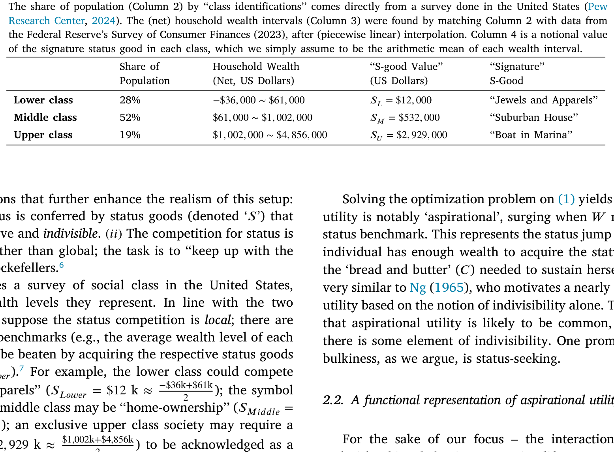
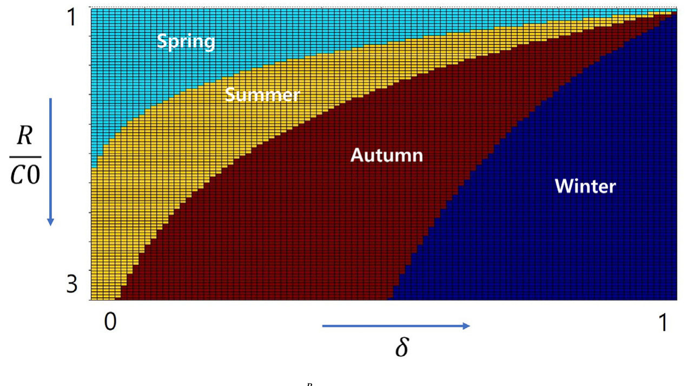
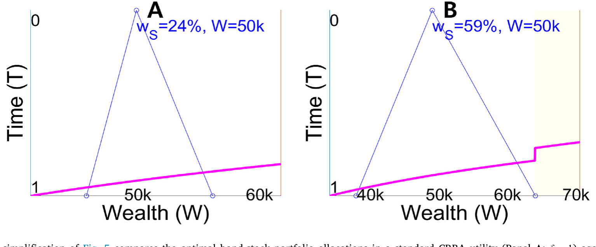
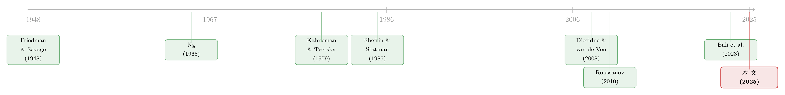

赌博的四季：当一个「够不着的目标」，同时教你买彩票和买保险
本文读的是 Aristidou, Giga, Lee & Zapatero (2025, Journal of Financial Economics)：他们在标准效用上加了一个「志向点（aspiration）」——一旦财富越过某条线，效用就跳一下——并证明，你离这条线有多远，决定了你想要正偏度还是负偏度的资产。同一套机制既能解释「为什么有人同时买彩票和买保险」，又能部分解释处置效应与低收入家庭的入市之谜，还在两个实验室实验里得到了验证。
1 引言：保险和彩票，为什么常常是同一个人买的
先讲一个快八十岁的老谜题。
1948 年，Friedman 和 Savage 注意到一件让标准效用理论很尴尬的事：同一个人，会一边掏钱买保险，一边掏钱买彩票。买保险，说明他厌恶风险；买彩票，又说明他偏好风险。一个理性的、凹效用 (concave utility) 的人怎么能同时干这两件事？为了圆这个场，他们干脆给效用函数中间安了一段「凸」的区间——于是在某个财富水平上，人会突然变得爱冒险。
这个「凸段」后来成了行为金融里反复出现的母题。前景理论 (Prospect Theory, Kahneman and Tversky, 1979) 用价值函数在参照点附近的弯折来制造它；Levy (1969) 直接把效用写成前三阶矩的函数。可问题是：那段凸性到底从哪儿来？ 是人脑天生的偏误，还是有更朴素的经济学理由？
本文的回答很「接地气」：来自志向。
这里有一个常被忽略的点。Friedman–Savage 的谜题，只有透过「波动率」这副眼镜看才成立；换成「偏度（skewness）」这副眼镜，谜题几乎自动消解——买彩票是做多右偏，买保险是做空左偏，两者合起来不过是「净偏好右偏」。本文真正要讲的，正是这副被前人忽略的偏度眼镜。
接着，一个自然的问题是：人为什么会有志向，志向又凭什么在效用上「砸出一个坑」？
2 一个「志向」是怎么长出来的：地位、商品与不可分性
作者从一个很具体的微观场景出发：地位 (social status)。
人不只在乎自己消费多少（记作 \(C\)），还在乎自己在小圈子里站第几排——这是 Roussanov (2010) 那一脉「为社会地位而冒险」的思路。但本文多走了一步：地位往往要靠地位商品（status good，记作 \(S\)）来兑现，而这些东西通常又贵又不可分。你不能买半套学区房来证明自己跻身中产，也不能买四分之一艘游艇来宣告进入上流。
作者用一份美国社会阶层的调查把这件事量化了：下层占 28%，中层占 52%，上层占 19%；与之匹配的「标志性地位商品」价值分别约为 $S_L=\$12{,}000$、$S_M=\$532{,}000$、$S_U=\$2{,}929{,}000$。这三个数字，就是横在每一层人面前的三道「门槛」。

Table 1
把「消费」和「地位」放进一个简单的对数效用里，并要求总开销不超过财富 \(W\)：
$$U(C, S) = \log(C) + \big[\log(S)\big]_{S_L,\,S_M,\,S_U}, \qquad C + S \le W$$
第二项是地位带来的效用，因为地位商品不可分，它被写成一个阶梯函数（在 \(S_L, S_M, S_U\) 处各跳一级）。解出这个优化问题，得到的关于财富的最优效用 \(U^*(W)\)，就会在财富刚刚够得着某个地位商品时猛地往上一窜。
这一窜，就是「志向」。它和 Ng (1965) 那篇老文章如出一辙——后者仅凭「支出的不可分性」就推出了几乎一模一样的志向型效用。换句话说，只要世界上存在不可分的大件（学区房、游艇、甚至一个大学学位），志向型效用就几乎无处不在。
3 志向效用的数学表达：一道被「折扣」压住的坎
然后，作者把上面那套地位故事抽象掉，只留下骨架。设一个期望效用最大化的人，初始禀赋为 \(C_0\)，他有一个志向 \(R\)（且 \(R>C_0\)）。低于 \(R\) 的回报会被他「打折扣」对待。最核心的方程长这样：
直觉很清楚：在 \(C=R\) 这一点，效用从 \(\delta u(R)\) 一跃而至 \(u(R)\)，凭空多出一段 \((1-\delta)u(R)\) 的跳跃。这道坎，就是 Friedman–Savage 苦苦寻找的那段凸性的来源。
但真正关键的一步在于「凹化」(concavification)。作者借用了 Diecidue and van de Ven (2008) 的微观基础：只要两条效用曲线拥有相同的凸包 (convex hull)，用鞅式赌博 (martingale gambles) 去优化，它们给出的最优解就完全一样。 形象地说，跨过那道坎的两点之间会架起一座「桥」（论文里的 BD 线段），在这座桥下方的财富区间里，人是风险偏好的——他愿意接受一个公平的赌博，去博一个越过 \(R\) 的机会。
于是问题就变得极其干净：在那段凸区间里，人到底会挑一个什么形状的赌博？
4 赌博的四季：你离目标有多远，决定了你想要什么偏度
这是全文的「核心中的核心」，作者把它浓缩成一张叫「赌博的四季 (The Four Seasons of Gambling)」的图。
为了让「形状」可选，作者引入了一组叫二项鞅 (binomial martingales) 的证券：均值和方差都固定，只有偏度可调。这样一来，人挑证券就等于纯粹地在挑偏度。结论是这样推进的：
第一种情形——志向近在咫尺。 如果 \(R\) 只比当前禀赋 \(C_0\) 高出一点点，那么最优策略是挑一个「大概率小赢、小概率大亏」的证券：它以很高的概率正好落在 \(R\) 上方。这种「高概率的小收益」恰恰是负偏度（左偏）。用作者的话说，此时人是在「卖出偏度」。这也正是买保险的影子——用一个小概率的大损失，换一个高概率的安稳。
第二种情形——志向遥不可及但仍有希望。 当 \(R\) 离 \(C_0\) 越来越远，对称的小赌已经够不着目标了，人只能「搏一把长线」(reach for a long shot)：挑一个「小概率大赢、大概率小亏」的证券。这就是正偏度（右偏），就是彩票。一个拿着死工资、却向往豪车游艇的中产，没有别的「现实路径」爬上阶梯，那买张彩票就成了唯一「靠谱」的选择。

Figure 3: ‘‘The Four Seasons of Gambling’’ (Thm 1 and 2). Fix any point of𝛿. As 𝑅 increases (moving downward,𝑖.𝑒.as the aspiration moves farther away)
如图 3 所示，固定折扣 \(\delta\)、让志向 \(R\) 由近及远地移动，最优的偏度需求会依次穿过几个「季节」：从近处的负偏度（卖偏度），到中段的正偏度（买彩票），再到目标彻底无望时回归标准的凹性行为（干脆不赌）。同一个人，仅仅因为目标的远近不同，就会在「买保险」和「买彩票」之间切换——Friedman–Savage 的谜题，至此被一个机制一口气解释干净。
值得停下来强调一句：这和经典的均值—方差分析针锋相对。在后者里，只要期望收益是零或负，理性人就该躲开风险；而在志向效用里，一个期望收益为零的公平赌博，照样会被欣然接受——因为它是够到目标的唯一阶梯。
5 一个反转：跳得越高，反而越不想要彩票
到这里你可能会以为：志向带来的「跳跃」越大，人就越想冒险、越爱彩票。然后反转出现了。
作者证明：如果越过志向带来的效用跳跃很大（也就是 \(\delta\) 很小、志向很「强烈」），人反而会选择偏度更低、甚至负偏度的证券。
为什么？因为跳跃越大，意味着「够到目标」这件事本身越重要、越输不起。这时人不再满足于「小概率搏一个大的」——万一没搏中，损失的是那段无比珍贵的跳跃。于是他被迫去挑那些以更高概率达到 \(R\) 的证券，哪怕代价是：一旦失败，消费水平会更低。这种证券，偏度低，甚至是负的。
这是个挺反直觉、也挺深刻的预测：志向越是「生死攸关」，人越会变得「求稳地冒险」——他要的不是最大的赢面，而是最高的到达概率。类似的比较静态分析，作者对风险厌恶程度和初始财富也都做了一遍。
6 把模型搬进实验室：用一笔慈善捐款「种」出志向
讲到这儿，一个老实人会问：现实里，研究者几乎永远观察不到一个人的真实投资、他的志向、以及他离目标还有多远。那这套理论怎么验证？
作者的办法很巧：在实验室里人为「种」出一个志向。
他们给大学生一组简单证券，均值和方差都锁死、只让偏度变化，让被试去挑。然后用一个非货币、却暖心的奖励来制造志向门槛——他们告诉被试：如果你的实验收益超过某个「捐款门槛 (Donation threshold)」，我们就以你的名义，向你选的慈善机构捐一笔钱。这笔捐款就扮演了志向点 \(R\) 的角色（文献里把捐款直接进效用的做法称作「暖光给予」warm-glow giving，见 Andreoni, 1990）。
具体的证券设计可以从附录里读到：比如某一轮里，所有选项的均值都固定在 18、方差固定在某个水平，只有偏度在 −2.7 到 +2.7 之间变化；负偏度选项的中奖概率高（如 (0.8, 0.2)，高概率小赢），正偏度选项的中奖概率低（如 (0.2, 0.8)，低概率大赢）。被试要做的，就是在这条「偏度光谱」上选一个点。
作者同时做了组内 (within-subject) 和组间 (between-subject) 两种设计，关键在于操纵捐款门槛离被试当前位置的远近。结果和理论预测高度一致：
- 当志向点近在眼前时，对负偏度资产的整体需求上升；
- 当志向可望但遥远时，对正偏度资产的需求上升；
- 偏度需求存在显著的异质性——可能因为捐款激发志向的程度因人而异，也可能源于人本身效用函数的「内在」差异。
这种「真金白银上场会改变行为」的实验思路，和本博客读过的两篇是同一家族——关于实验室里如何用真实下注反推偏好，可参见《用真金白银投出来的前景理论》；关于「下注的赌注变大反而让人更上头」，可参见《当真金白银上场，人反而更「上头」了》。
7 一鱼三吃：处置效应与「穷人为什么不入市」
一个好机制的标志，是它能顺手解释别的谜题。志向效用至少又啃下了两块。
第一块是处置效应 (disposition effect, Shefrin and Statman, 1985)，即「过早卖出盈利、死扛亏损」。志向能解释它的时间维度 (temporal component)：志向像一个清晰的里程碑——「投资一旦超过那只名牌包的价格我就卖」——于是人一旦盈利越过 \(R\) 就急着兑现（卖在赢时），亏损时则迟迟不肯了结（扛在输时）。但作者很诚实地承认了局限：模型解释不了横截面维度 (cross-sectional component)，即在一篮子股票里具体该卖哪只、留哪只。因为要做到这点，得给每只股票单独安一个心理账户和目标，而这件事「太不理性」，和模型「除了志向之外都很理性」的底色冲突。
第二块更漂亮，是它和入市行为的联动。 Heimer (2016) 提过一个对前景理论的尖锐质疑：被前景理论判定为「会有处置效应」的人，恰恰是最不可能、最悲观、最不愿意入市的那群人——可你得先入市，才谈得上处置效应啊。所以一个合格的解释，必须同时生成强烈的入市动机。志向效用天然满足这一点：那段凸性让人变得风险偏好，主动去搏，从而一边入市、一边表现出处置效应。
顺着这条线，低收入家庭那个老谜题也松动了：他们入市率低、入市了又几乎不分散——主流理论觉得这「次优」得离谱。但在志向叙事里，这恰恰是最优的替代：与其买分散化、零偏度的组合，不如把钱投向更正偏的「彩票」（无论是个股还是真彩票）。而 Bali et al. (2023) 的证据进一步说明，志向不是穷人的专利——富人也在股市里主动冒险，去够他们「上流生活」那个更高的志向。图 6 用一个单期的简化，把 CRRA 和志向效用下的股债配置摆在一起对比，差别一目了然。

Figure 6: This single-period simplification ofFig. 5compares the optimal bond-stock portfolio allocations in a standard CRRA utility 1) against that o
8 文献脉络
把这条线捋一捋：最早是 Friedman and Savage (1948) 为「保险+彩票」之谜在效用里硬塞进一段凸性；Ng (1965) 给出了「不可分支出」这个更朴素的微观理由。随后两条路分叉——一条是 Kahneman and Tversky (1979) 的前景理论、Shefrin and Statman (1985) 的处置效应、Lopes (1987) 的 SP/A 理论，从心理偏误和概率加权切入；另一条是 Constantinides (1990)、Campbell and Cochrane (1999) 的习惯形成，以及 Roussanov (2010) 的地位寻求，从「相对财富」切入。

本文的位置在两条路的交汇处：它接过 Diecidue and van de Ven (2008) 对「志向是效用上的一个间断点」的微观基础，用凹化原理把它和偏度需求精确地连起来；又借 Roussanov (2010) 式的地位故事给那段凸性一个社会学的、而非纯心理偏误的根基；最后用 Bali et al. (2023) 的横截面证据把叙事从穷人延伸到整个财富分布。可以说，它是在 Friedman–Savage 的老瓶里，装了一瓶有微观基础、又能被实验检验的新酒。
评论与延伸（Q&A + 研究方向）
(a) 几个可能的疑问
Q：志向效用和前景理论，到底差在哪？
两者都有一段凸性、都谈「参照点」，但来源根本不同。前景理论的弯折来自对损益的心理感受和概率加权，是「非理性」的；志向效用里那道坎来自地位商品的不可分性这一客观经济事实，凸性是凹化后内生出来的，agent 在其余地方完全理性。这也是为什么本文能解释处置效应的时间维度，却解释不了横截面维度——它「太理性」了。
Q：「卖负偏度=买保险」这个等价，会不会只是文字游戏？
不算。关键洞见是 Friedman–Savage 之谜只在「波动率」视角下才是谜：买保险和买彩票在方差上一升一降，看着矛盾。但翻译成偏度，买保险=做空左偏、买彩票=做多右偏，两者其实指向同一个「净偏好右偏」。换一副眼镜，矛盾就消失了——这本身就是贡献。
Q：实验里用「慈善捐款」当志向，外部效度够吗？
这是最该担心的地方。捐款门槛是个非货币、利他性质的目标，和现实中「买学区房」「跻身上流」这种自利、可消费的志向未必是一回事；而且不同人对「捐款能否激发志向」的反应差异巨大——作者自己也把结果里的强异质性归因于此。所以实验证明的是「志向一移动、偏度偏好就跟着移动」这个定性方向，而非任何具体量级。
Q：那个「跳得越高反而越不爱彩票」的反转，会不会只是参数挑出来的？
它是比较静态的解析结论，不是数值巧合：跳跃越大（δ 越小），到达目标的边际价值越高，agent 越要最大化「到达概率」而非「赢面」，于是转向高概率、低偏度的证券。直觉上站得住，但它依赖「志向是单一、固定的一道坎」这个设定——如果现实中人有多重、可调整的志向，这个反转会被稀释。
Q：模型解释不了处置效应的横截面，这算硬伤吗？
算一半。它诚实地划出了边界：志向能让你「在盈利时卖、亏损时扛」，但没法告诉你该卖组合里哪一只。要补上这块，得给每只股票配独立的心理账户和目标，而那需要放弃模型「理性」的底色。这既是局限，也反过来说明它和纯行为模型的分工。
Q：这套理论对资产定价有何含义？
作者点到了：如果志向在财富分布上是「多重」的（穷人想翻身、富人求上流），其中某些可能普遍到足以被加总定价。这与「富人为社会地位而追逐特质波动率」（Roussanov, 2010）一脉相承，意味着偏度可能不只是个体选择，而能渗进横截面定价——但这一步本文只是猜想，未做实证。
(b) 几个可能的研究问题与提案
1. 把「志向偏度」搬进公司债市场。 【经济故事】个人投资者对正偏度的偏好，在股票里已被反复验证（彩票股），但高收益债（high-yield）本质上就是一类「左偏+小概率违约大亏」的资产，零售/养老资金的志向位置或许能预测他们在信用利差上的需求。 【可行性】中。需要把零售持有人层面的持仓（如 TRACE 配合基金持仓）与偏度度量结合，识别上靠「志向距离」的代理变量（如距离某个净值里程碑的远近），不容易但 doable。
2. 外资持有人的「志向」是否不同？ 【经济故事】不同国别的投资者，地位参照系和志向门槛可能系统性不同；若外资在某市场偏好正偏度资产，可能扭曲该市场的偏度定价。 【可行性】中偏低。需要分国别的持仓数据与偏度暴露，识别外资「志向」近乎不可观测，只能借汇率/财富冲击做间接检验。
3. 流动性冲击如何重置志向，进而改变偏度需求？ 【经济故事】当一次财富冲击让投资者突然「够不着」原有目标，按本文逻辑，他应从负偏度（卖偏度）切换到正偏度（搏长线）——这能在面板里检验。 【可行性】高。用经纪商账户数据，以外生财富冲击（如局部裁员、房价波动）为事件，看冲击后账户的偏度暴露（彩票股/期权占比）是否系统性上移。
4. 实验复现 + 真实货币志向。 【经济故事】把本文的慈善门槛换成自利的货币志向（达到某金额解锁一笔现金奖励），检验反转预测（跳跃越大越不爱彩票）是否还成立。 【可行性】高。标准实验室设计，成本可控，直接对准本文最反直觉、也最易被质疑的那条预测。
写在最后
这篇文章最让我欣赏的，是它的「节俭」：只往标准效用里加了一道由不可分性撑起的坎，就一口气把保险与彩票、处置效应的时间维度、入市与不分散三件事串了起来，且每一步都讲得清清楚楚、可被实验检验。凹化原理用得干净，「四季」那张图把一个连续的比较静态结论讲成了一个人人能记住的隐喻——这是好理论该有的样子。
担忧主要在识别和外部效度。实验用慈善捐款当志向，激发强度因人而异，能证明方向却给不出可外推的量级；而模型那条「太理性」的底色，让它在处置效应的横截面上止步。后续我最想看到的，是把「志向距离」用真实数据里可观测的里程碑（净值整数关口、退休目标、首付门槛）操作化，看偏度需求是否真的随距离切换——如果能在公司债或零售期权数据里复现「四季」，这套理论的分量会重得多。
参考文献
- Andreoni, J. (1990). Impure altruism and donations to public goods: A theory of warm-glow giving. Economic Journal 100(401), 464–477.
- Bali, T.G., et al. (2023). Do the rich gamble in the stock market? Low risk anomalies and wealthy households. Journal of Financial Economics 150(2), 103715.
- Barberis, N., Huang, M. (2008). Stocks as lotteries: The implications of probability weighting for security prices. American Economic Review 98(5), 2066–2100.
- Brunnermeier, M., Parker, J., Gollier, C. (2007). Optimal beliefs, asset prices, and the preference for skewed returns. American Economic Review 97(2), 159–165.
- Campbell, J.Y., Cochrane, J.H. (1999). By force of habit: A consumption-based explanation of aggregate stock market behavior. Journal of Political Economy 107(2), 205–251.
- Constantinides, G. (1990). Habit formation: A resolution of the equity premium puzzle. Journal of Political Economy 98(3), 519–543.
- Diecidue, E., van de Ven, J. (2008). Aspiration level, probability of success and failure, and expected utility. International Economic Review 49(2), 683–700.
- Friedman, M., Savage, L.J. (1948). The utility analysis of choices involving risk. Journal of Political Economy 56(4).
- Heimer, R.Z. (2016). Peer pressure: Social interaction and the disposition effect. Review of Financial Studies 29(11), 3177–3209.
- Kumar, A. (2009). Who gambles in the stock market? Journal of Finance 64(4), 1889–1933.
- Levy, H. (1969). A utility function depending on the first three moments. Journal of Finance 24(4), 715–719.
- Lopes, L.L. (1987). Between hope and fear: The psychology of risk. Advances in Experimental Social Psychology 20, 255–295.
- Mitton, T., Vorkink, K. (2007). Equilibrium underdiversification and the preference for skewness. Review of Financial Studies 20(4), 1255–1288.
- Ng, Y.-K. (1965). Why do people buy lottery tickets? Choices involving risk and the indivisibility of expenditure. Journal of Political Economy 73(5).
- Roussanov, N. (2010). Diversification and its discontents: Idiosyncratic and entrepreneurial risk in the quest for social status. Journal of Finance 65(5), 1755–1788.
- Shefrin, H., Statman, M. (1985). The disposition to sell winners too early and ride losers too long: Theory and evidence. Journal of Finance 40(3), 777–790.